install.packages("mapSpain", dependencies = TRUE)7 Casos de estudio
7.1 Representación de datos espaciales con ggplot2
7.2 Uso del paquete mapSpain
Vamos a adaptar algunos ejemplos de la charla sobre el paquete mapSpain efectuada para el Grupo de Usuarios de R de Madrid, en noviembre de 2021.
Como hemos visto, este paquete facilita mucho la creación de mapas de España a diferentes niveles administrativos, permitiendo además usar imágenes de servicios Web Map Service (WMS) o Web Map Tile Service (WMTS). Los segundos suelen ser más eficientes, ya que generan previamente las imágenes de teselas (tiles) para niveles de escala predefinidos, almacenándolos en caché.
Otro aspecto muy útil son las funciones que incluye este paquete para normalización de los nombres de comunidades autónomas y provicinas, lo que facilita el proceso de manipulación y transformación de datos (aunque no sean, necesariamente, para usarse en visualizaciones espaciales).
Utiliza varias fuentes de información, tales como GISCO (Eurostat, mediante el paquete giscoR, el IGN, así como diferentes instancias dentro de la Infraestructura de Datos Espaciales de España (IDEE) que publican servicios de teselas en los formatos WMS/WMTS admitidos por este paquete.
- Página web de documentación: https://ropenspain.github.io/mapSpain/.
Lo más habitual es descargar e instalar la versión estable del paquete, disponible en CRAN.
library(mapSpain)
library(tidyverse)── Attaching core tidyverse packages ──────────────────────── tidyverse 2.0.0 ──
✔ dplyr 1.1.4 ✔ readr 2.1.5
✔ forcats 1.0.1 ✔ stringr 1.5.2
✔ ggplot2 4.0.0 ✔ tibble 3.3.0
✔ lubridate 1.9.4 ✔ tidyr 1.3.1
✔ purrr 1.1.0
── Conflicts ────────────────────────────────────────── tidyverse_conflicts() ──
✖ dplyr::filter() masks stats::filter()
✖ dplyr::lag() masks stats::lag()
ℹ Use the conflicted package (<http://conflicted.r-lib.org/>) to force all conflicts to become errorsPara acelerar la ejecución de código, dado que el paquete se descarga datos desde repositorios externos, es muy recomendable establecer un directorio de descarga específico para el usuario.
# El argumento install = TRUE hace esta configuración persistente
esp_set_cache_dir("~/R/mapslib/mapSpain", install = TRUE, verbose = TRUE)7.2.1 Primer ejemplo: municipios de Castilla-La Mancha
En este primer ejemplo, exploramos cómo utilizar las funciones incluidas en mapSpain para representar los municipios de Castilla-La Mancha en diferentes colores, como muestra la Figura 7.1.
library(mapSpain)
library(tidyverse)
galicia <- esp_get_munic_siane(region = "Castilla-La Mancha") %>%
# Normalizar etiquetas
mutate(
Provincia = esp_dict_translate(ine.prov.name, "es")
)
ggplot(galicia) +
geom_sf(aes(fill = Provincia),
color = "grey70"
) +
labs(title = "Provincias de Castilla-La Macha") +
scale_fill_discrete(
type =
hcl.colors(5, "Purples")
) +
theme_bw()
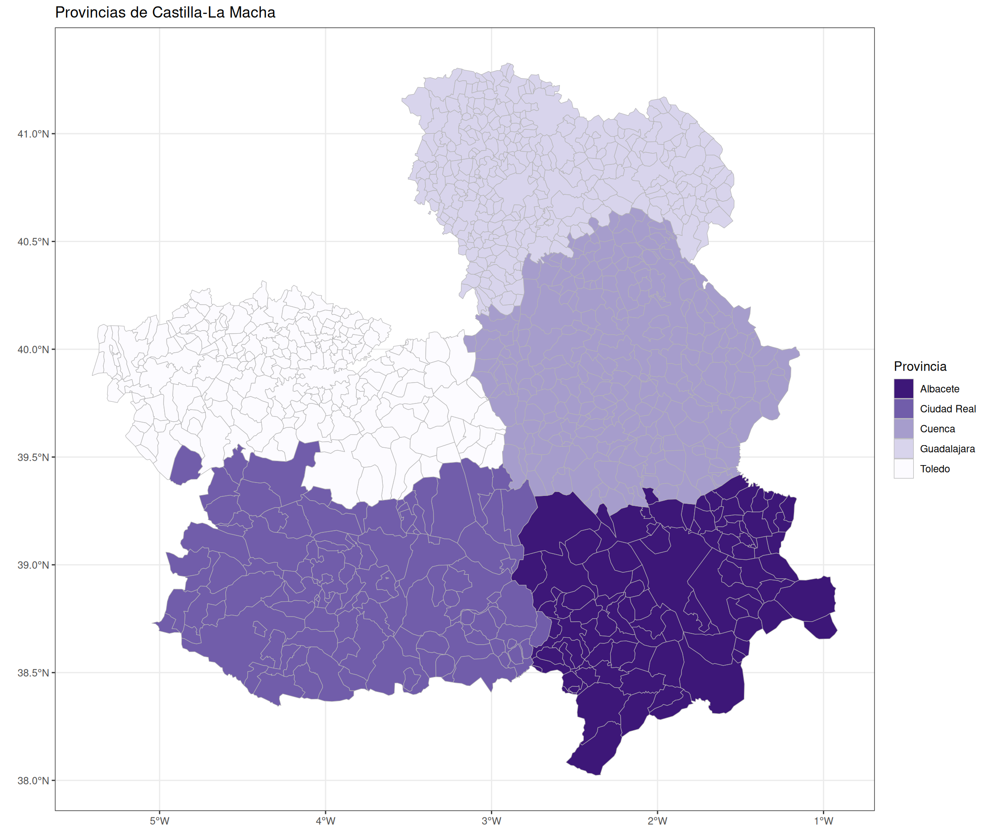
7.2.2 Diccionarios de términos
Cuando representamos mapas, es conveniente contar con una representación unívoca de las etiquetas identificadoras de CCAA y provincias. La función esp_dict_region_code() realiza la conversión entre textos y códigos, soportando varios esquemas de codificación (ISO2, NUTS y dos estándares del INE).
Por otra parte, la función esp_dict_transalate() permite traducir las etiquetas a cinco idiomas distintos (castellano, inglés, catalán, gallego y vasco). Veamos algunos ejemplos.
provs <- c("Murcia", "Sevilla", "Madrid", "Albacete", "Baleares")
# Codificación de etiquetas
esp_dict_region_code(provs, destination = "nuts") # Indicar esquema codif.[1] "ES62" "ES618" "ES30" "ES421" "ES53" esp_dict_region_code(provs, destination = "cpro") # Estándar INE[1] "30" "41" "28" "02" "07"esp_dict_region_code(provs, destination = "iso2")[1] "ES-MC" "ES-SE" "ES-MD" "ES-AB" "ES-IB"# Traducciones
esp_dict_translate(provs, lang = "en")[1] "Murcia" "Seville" "Madrid" "Albacete"
[5] "Balearic Islands"esp_dict_translate(provs, lang = "es")[1] "Murcia" "Sevilla" "Madrid" "Albacete" "Baleares"esp_dict_translate(provs, lang = "ga")[1] "Murcia" "Sevilla" "Madrid" "Albacete"
[5] "Illas Baleares"7.2.3 Delimitaciones en mapa político
Con el paquete mapSpain se pueden obtener directamente los límites políticos a diferentes niveles:
- Todo el territorio nacional.
- NUTS (Eurostat): clasificación estadística de Eurostat.
- 0 (país).
- 1,2 (CCAA, regiones básicas, políticas regionales).
- 3 (regiones menores, diagnósticos específicos).
- CCAA.
- Provincias.
- Municipios.
En el caso de CCAA, provincias o municipios existen dos versiones que usan diferentes fuentes de datos. En todos los casos, se puede descargar la información en diferente proyecciones y con varios niveles de resolución.
esp_get_xxxx()(GISCO).esp_get_xxxx_siane()(fuente: IGN).
esp <- esp_get_country(moveCAN = FALSE) # No desplaza Canarias
ggplot(esp) +
geom_sf(fill = "#f9cd94") +
theme_light()
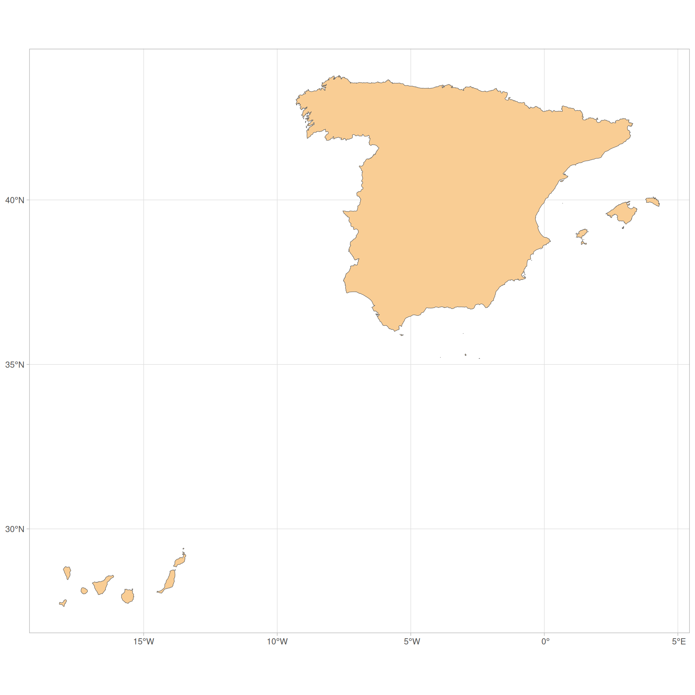
Se recomienda usar la opción moveCAN = FALSE siempre que se trabaje con imágenes, mapas interactivos o se vayan a realizar análisis espaciales.
También es habitual añadir líneas adicionales en el mapa. Por ejemplo, la Figura 7.3 muestra un mapa similar al anterior, pero además incluyendo el límite entre las dos provincias de Canarias.
esp_can <- esp_get_country()
can_prov <- esp_get_can_provinces()
can_box <- esp_get_can_box()
ggplot(esp_can) +
geom_sf() +
geom_sf(data = can_prov) +
geom_sf(data = can_box) +
theme_linedraw()
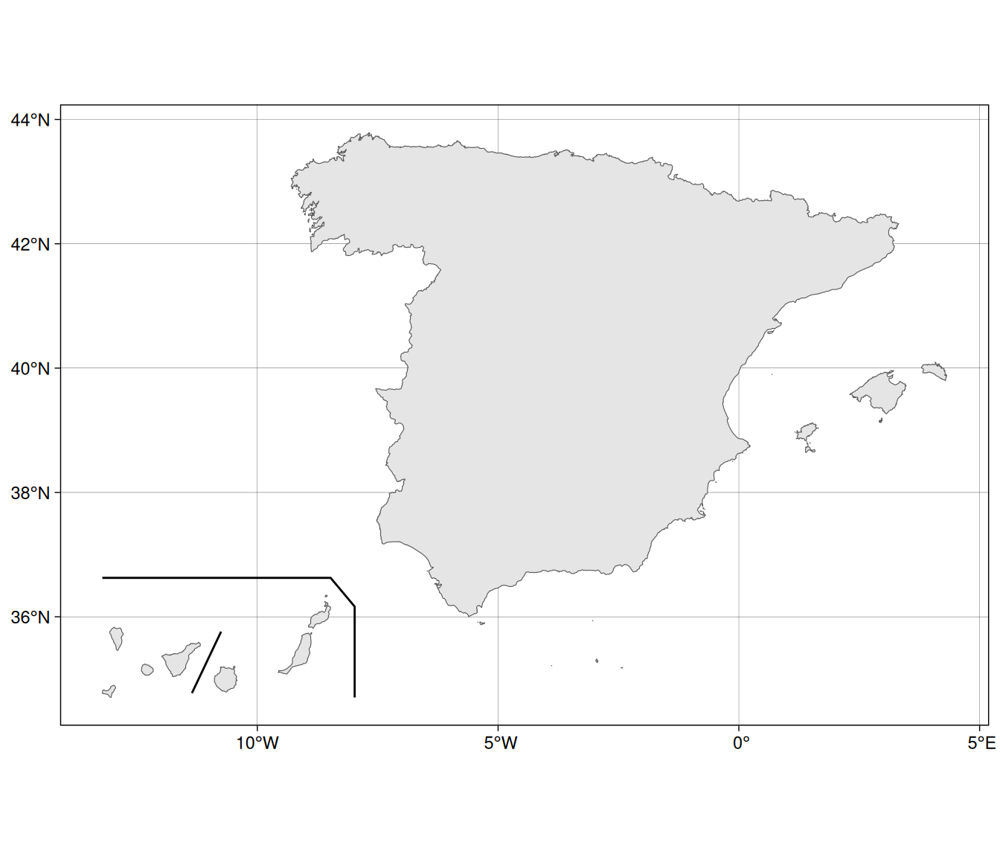
7.2.4 Códigos NUTS
La clasificación NUTS 2024 proporciona el listado de los códigos identificativos de las regiones a distintos niveles. La Figura 7.4 muestra el contenido del archivo para las tres regiones de menor nivel de Baleares. A su vez, la Figura 7.5 muestra el mapa ya representado.
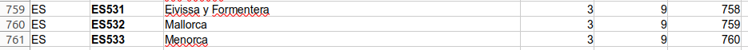
nuts3_baleares <- c("ES531", "ES532", "ES533")
nuts3_sf <- esp_get_nuts(region = nuts3_baleares)
ggplot(nuts3_sf) +
geom_sf(aes(fill = NAME_LATN)) +
labs(fill = "Baleares: NUTS3") +
scale_fill_viridis_d() +
theme_minimal()
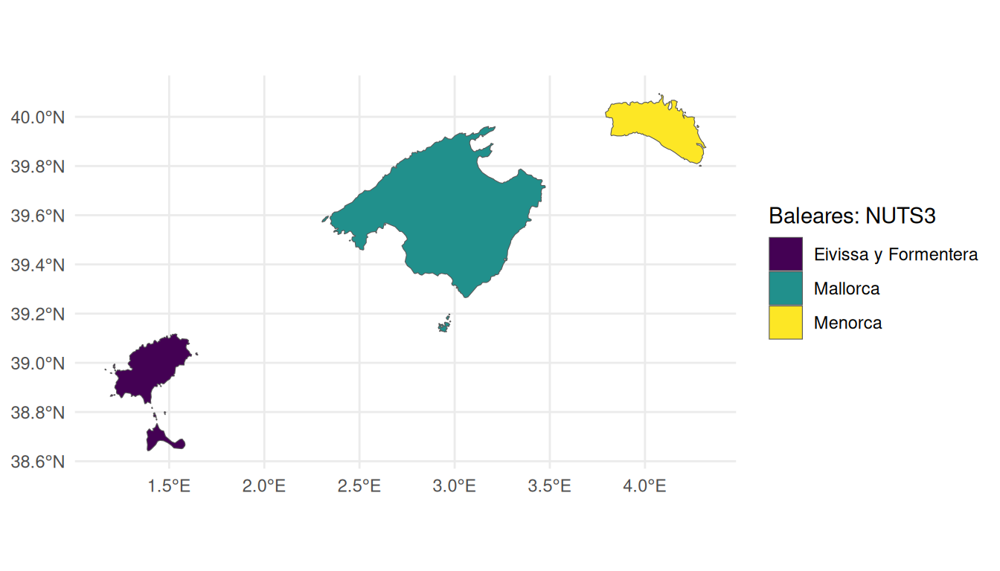
7.2.5 Límites políticos: Comunidades Autónomas
ccaa <- esp_get_ccaa(ccaa = c(
"Catalunya",
"Comunidad Valenciana",
"Aragón",
"Baleares"
))
ccaa <- ccaa %>% mutate(
ccaa_cat = esp_dict_translate(ccaa$ine.ccaa.name, "ca")
)
ggplot(ccaa) +
geom_sf(aes(fill = ccaa_cat)) +
labs(fill = "Comunitats autònomes") +
theme_minimal() +
scale_fill_discrete(type = hcl.colors(4, "Plasma"))
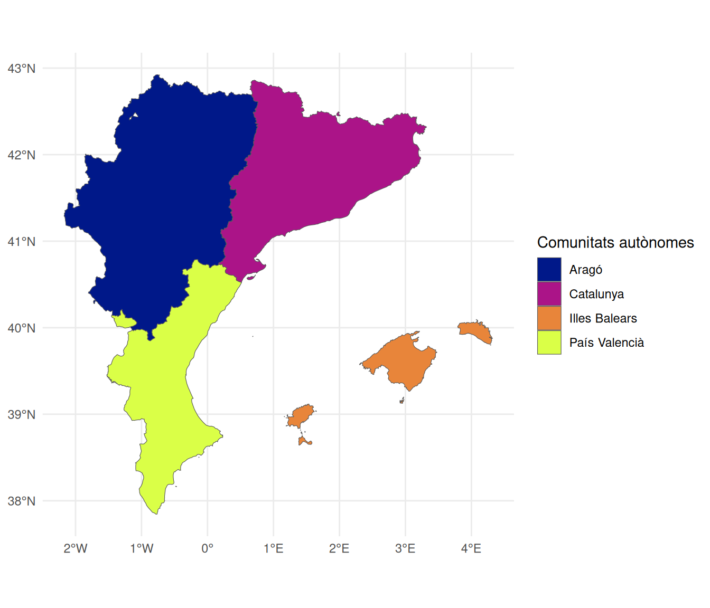
Con el servicio *_siane (IGN), si se pasa entre los valores una entidad de orden superior (por ejemplo, una CCAA cuando el resto son provincias), entonces se obtienen todas las entidades del mismo nivel que el resto de la lista dentro de la entidad de orden superior. En el siguiente ejemplo, Castilla-La Mancha es una CCAA y el resto son provincias.
provs <- esp_get_prov_siane(c(
"Castilla-La Mancha", "Jaén",
"Murcia", "Alicante", "Valencia"
))
ggplot(provs) +
geom_sf(aes(fill = prov.shortname.es),
alpha = 0.9
) +
scale_fill_discrete(type = hcl.colors(12, "Cividis")) +
theme_minimal() +
labs(fill = "Provincias")
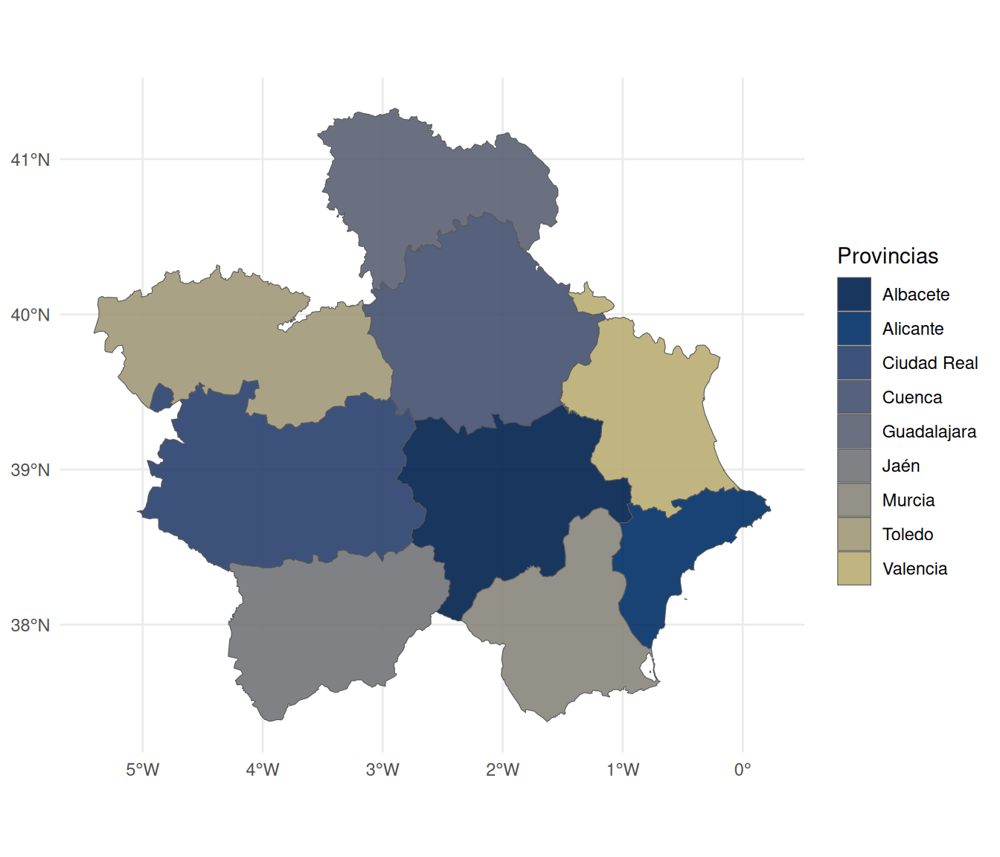
7.2.6 Límities políticos: municipios
munic <- esp_get_munic(region = "Albacete") %>%
# Datos de ejemplo: Población INE
left_join(mapSpain::pobmun19, by = c("cpro", "cmun"))
ggplot(munic) +
geom_sf(aes(fill = pob19), alpha = 0.9, color = NA) +
scale_fill_gradientn(
colors = hcl.colors(100, "Inferno"),
n.breaks = 10,
labels = scales::label_comma(),
guide = guide_legend()
) +
labs(
fill = "Habitantes",
title = "Población en Albacete",
subtitle = "Datos INE (2019)"
) +
theme_void() +
theme(
plot.background = element_rect("grey80"),
text = element_text(face = "bold"),
plot.title = element_text(hjust = .5),
plot.subtitle = element_text(hjust = .5)
)
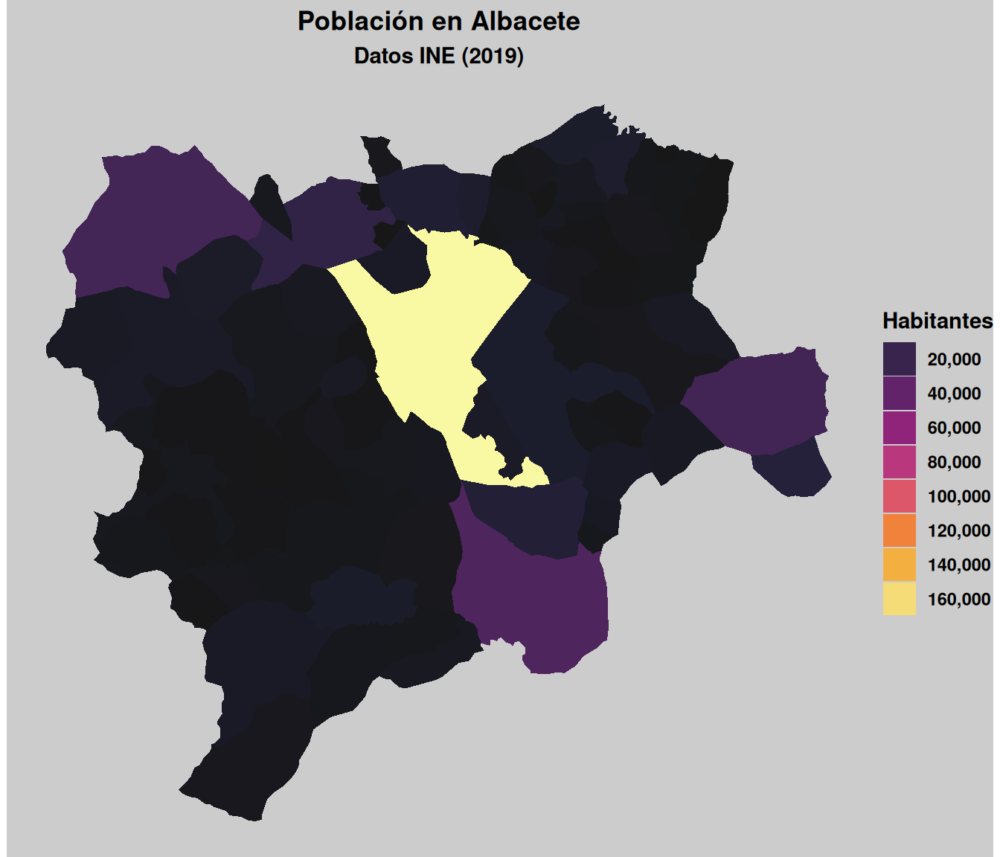
En el apartado 7.3 del libro sobre visualización de datos de K. Healy (Healy, 2019) se pueden encontrar una representación esquemática más legible de las regiones de un país, llamada statebins, asociada a una variable cuantitativa. Esta representación esquemática es más apropiada cuando el foco de interés es comparar y mostrar resultados cuantitativos entre diferentes regiones sin que importe tanto realizar una representación gráfica fidedigna. La Figura 7.9 y Figura 7.10 muestran dos ejemplos con este paquete para el mapa de España, usando hexágonos y cuadrados, respectivamente.
hex <- esp_get_hex_ccaa()
ggplot(hex) +
geom_sf() +
geom_sf_text(aes(label = iso2.ccaa.code)) +
theme_void()Warning in st_point_on_surface.sfc(sf::st_zm(x)): st_point_on_surface may not
give correct results for longitude/latitude data
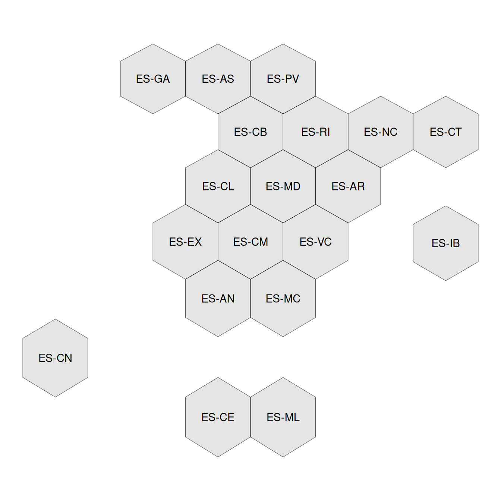
cuad <- esp_get_grid_prov()
ggplot(cuad) +
geom_sf() +
geom_sf_text(aes(label = iso2.prov.code)) +
theme_void()Warning in st_point_on_surface.sfc(sf::st_zm(x)): st_point_on_surface may not
give correct results for longitude/latitude data
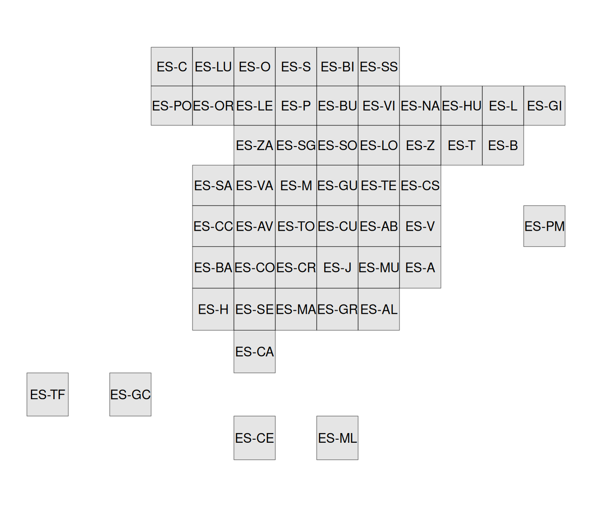
7.2.7 Mapas dinámicos con Leaflet
Los proveedores de diferentes organismos públicos se han conseugido del plug-in para Leaflet leaflet-providerESP.
stations <- esp_get_railway(spatialtype = "point", epsg = 4326)
library(leaflet)
leaflet(stations, elementId = "railways") %>%
addProviderEspTiles("IGNBase.Gris", group = "Base") %>%
addProviderEspTiles("MTN", group = "MTN") %>%
addProviderEspTiles("RedTransporte.Ferroviario",
group = "Lineas Ferroviarias") %>%
addMarkers(group = "Estaciones",
popup = sprintf(
"<strong>%s</strong>",
stations$rotulo) %>%
lapply(htmltools::HTML)
) %>%
addLayersControl(
baseGroups = c("Base", "MTN"),
overlayGroups = c("Lineas Ferroviarias", "Estaciones"),
options = layersControlOptions(collapsed = FALSE)
)7.2.8 Mapas geográficos
hypsobath <- esp_get_hypsobath()
# Error on the data provided - There is an empty shape
# Remove:
hypsobath <- hypsobath[!sf::st_is_empty(hypsobath), ]
# Tints from Wikipedia
# https://en.wikipedia.org/wiki/Wikipedia:WikiProject_Maps/Conventions/
# Topographic_maps
bath_tints <- colorRampPalette(
rev(
c(
"#D8F2FE", "#C6ECFF", "#B9E3FF",
"#ACDBFB", "#A1D2F7", "#96C9F0",
"#8DC1EA", "#84B9E3", "#79B2DE",
"#71ABD8"
)
)
)
hyps_tints <- colorRampPalette(
rev(
c(
"#F5F4F2", "#E0DED8", "#CAC3B8", "#BAAE9A",
"#AC9A7C", "#AA8753", "#B9985A", "#C3A76B",
"#CAB982", "#D3CA9D", "#DED6A3", "#E8E1B6",
"#EFEBC0", "#E1E4B5", "#D1D7AB", "#BDCC96",
"#A8C68F", "#94BF8B", "#ACD0A5"
)
)
)
levels <- sort(unique(hypsobath$val_inf))
# Create palette
br_bath <- length(levels[levels < 0])
br_terrain <- length(levels) - br_bath
pal <- c(bath_tints((br_bath)), hyps_tints((br_terrain)))
ggplot(hypsobath) +
geom_sf(aes(fill = as.factor(val_inf)),
color = NA
) +
coord_sf(
xlim = c(-9.5, 4.4),
ylim = c(35.8, 44)
) +
scale_fill_manual(values = pal) +
guides(fill = guide_legend(
title = "Elevation",
reverse = TRUE,
keyheight = .8
))
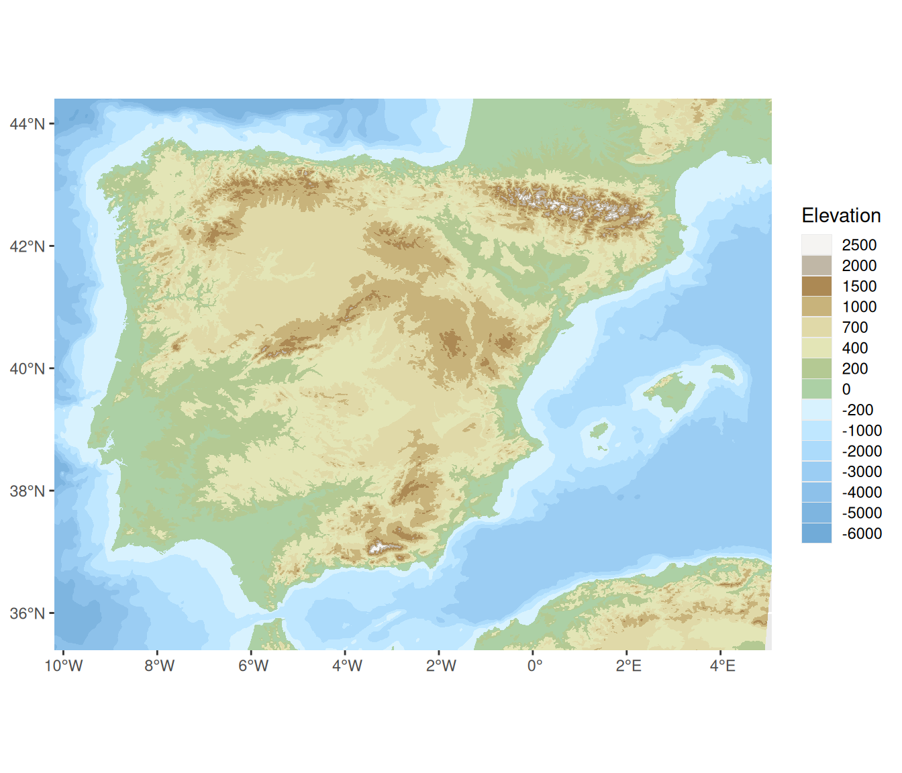
hydroland <- esp_get_hydrobasin(domain = "land")
hydrolandsea <- esp_get_hydrobasin(domain = "landsea")
ggplot(hydroland) +
geom_sf(data = hydrolandsea, fill = "skyblue4", alpha = .4) +
geom_sf(fill = "skyblue", alpha = .5) +
geom_sf_text(aes(label = rotulo),
size = 3, check_overlap = TRUE,
fontface = "bold",
family = "serif"
) +
coord_sf(
xlim = c(-9.5, 4.5),
ylim = c(35, 44)
) +
theme_void()Warning in st_point_on_surface.sfc(sf::st_zm(x)): st_point_on_surface may not
give correct results for longitude/latitude data